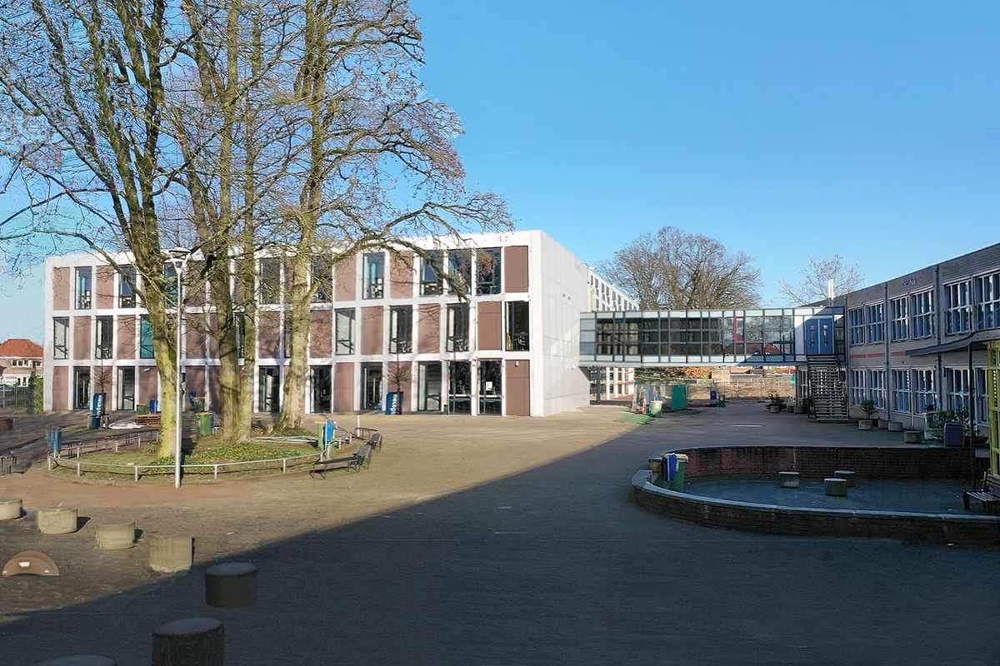

ik zit op het het Christelijk Lyceum Veenendaal (CLV). Het CLV is een middelbare school in Veenendaal, Nederland. Het biedt onderwijs op verschillende niveaus, van vmbo tot en met vwo. Het is een christelijke school waar normen en waarden vanuit een christelijk perspectief worden onderwezen.

ik heb het vakkenpakket N&T met informatica Duits en Biologie en ik ga de toetsweek in met: Godsdienst: 6 Nederlands: 7 Duits: 6 Engels: 7 Wiskunde: 7 natuurkunde: 8 scheikunde: 8 NWO: 6 biologie: 7 informatica: 7 CKV: 7